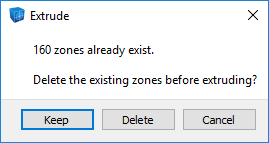
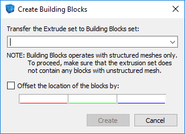

执行挤出
一旦在构建视图和挤出视图中输入了必要信息，模型即可挤出为 FLAC3D 网格单元或块体构建（仅当挤出集中不含非结构化网格时）。
要挤出模型，请单击“挤出”工具按钮（ ）或“创建块体构建…”工具按钮（
）或“创建块体构建…”工具按钮（ ）。在这两种情况下，工具按钮仅在挤出视图处于活动状态时可用。在构建视图中，这两个按钮均被禁用。
）。在这两种情况下，工具按钮仅在挤出视图处于活动状态时可用。在构建视图中，这两个按钮均被禁用。
挤出为网格单元
第一次创建网格时，您只需单击挤出按钮。生成的网格将显示在“模型”窗格中（可能需要按 Ctrl+R 重置视图）。
每次使用挤出按钮都会向模型中添加网格单元——该按钮可以重复使用，即使对同一个挤出集、即使未对该集做任何更改也是如此。一旦模型中包含网格单元，之后每次使用挤出按钮都会显示此处所示的警告对话框。

图 1：当模型已有网格单元时尝试挤出挤出集会出现的警告对话框
选择“保留”将保留所有现有网格单元，并添加所请求挤出产生的网格单元。“删除”将从模型中移除现有网格单元，并由所请求挤出创建新的网格单元。按下“取消”将在对模型做出任何更改之前终止挤出。
构建块
由于“块体构建”设计用于处理结构化三维网格，只有当挤出集在构建视图中仅包含结构化网格时，您才能继续使用此选项。如果挤出集中包含任何带非结构化网格的块体，则会显示错误消息，并且不会创建任何块体构建。
当您选择创建块体构建时，将出现一个对话框，要求您为要挤出到的块体集命名（可以是现有集或新集），并可选择提供位置偏移。

图 2：“创建块体构建”对话框
新挤出将显示在“块体构建”窗格中。
状态栏
在模型挤出的过程中——根据挤出集的复杂程度，可能需要一些时间——状态栏右侧会显示进度条。
| 这些内容对您有帮助吗？… | FLAC3D © 2019, Itasca | 原文更新于 2020 年 10 月 8 日 |